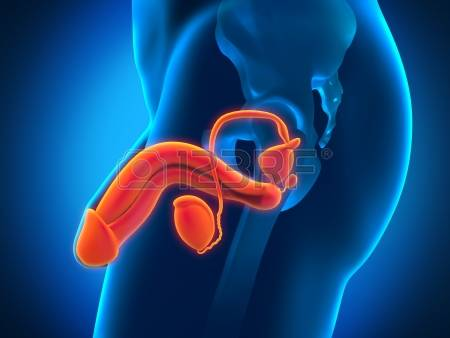

Sistema Genital Masculino
Sistema responsável pela reprodução, excreção e produção hormonal do homem

Introdução
Componentes
Escroto
Epidídimo
Canal Deferente
Testículo
Glândulas
Pênis
Observações
Introdução

Os órgãos do sistema genital masculino podem ser divididos no órgão espermatogenético que é o testículo e em vias espermáticas (epidídimo, ducto deferente, ducto ejaculador e uretra) responsáveis de armazenar temporariamente os espermatozóides até o momento de serem exteriorizados, quando então atravessam essas vias. Há diversas glândulas que elaboram o líquido seminal, que são as vesículas seminais, próstata e glândulas bulbo-uretrais.
Escroto
É um saco termo-regulador que favorece a formação do espermatozoide (espermatogênese- que ocorre nos túbulos seminíferos).
Epidídimo
Descansa sobre o testículo. Sua função é a maturação dos espermatozoides.
Canal Deferente
O canal deferente estende-se do epidídimo até a próstata. Possui aproximadamente 45 cm.
Testículo
É uma estrutura ovóide, considerado a gônada masculina e tem como função fabricação dos espermatozóides e dos hormônios sexuais.
Glândulas
A próstata, as glândulas bulbouretrais, e as vesículas seminais são glândulas que contribuem para a constituição do sêmem.
Pênis
É o órgão da cópula, formado por dois corpos cavernosos e um esponjoso, estruturas importantes para a ereção. O pênis possui também um corpo e uma glande do pênis que é coberta pelo prepúcio do pênis.
Observações
Fimose é uma patologia causada quando o prepúcio é tem um pequeno orifício, isso não permite a retração do pênis. A terapêutica empregada é cirúrgica (postectomia).